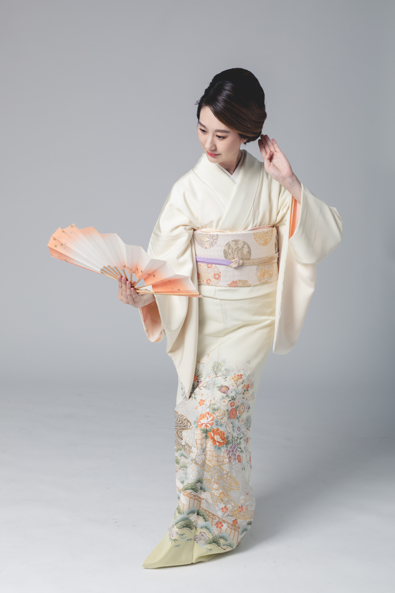
SEI は、香港で日本舞踊（日本古典舞踊）を通じて培われた"所作の美"を伝えるプライベートスタジオです。SEI is a private Nihon Buyo studio in Hong Kong offering authentic Japanese dance and culture.
香港で日本舞踊・着物・日本文化を体験できる唯一のプライベート教室。Learn Japanese dance, kimono dressing, and traditional Japanese arts in Hong Kong.
国際都市・香港において、日本の伝統文化を深く体感できる空間をご提供いたします。Experience authentic Japan culture in Hong Kong.
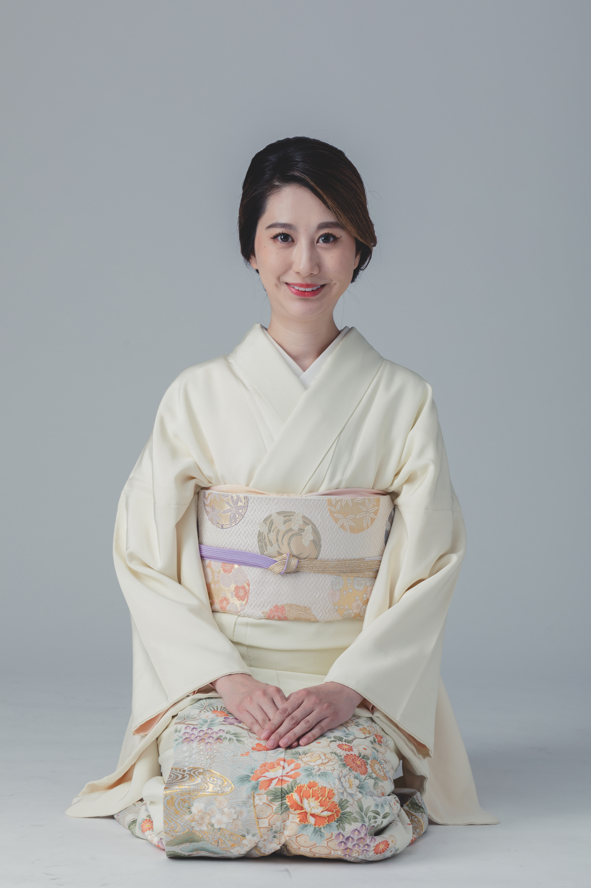
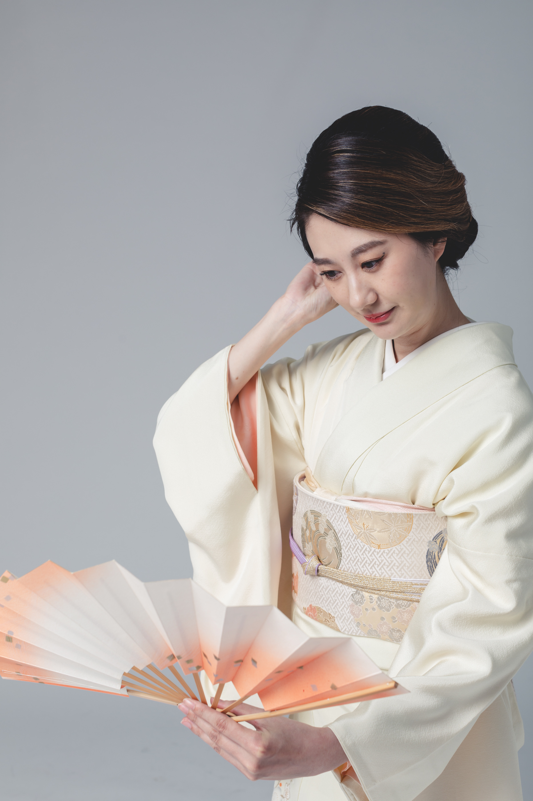
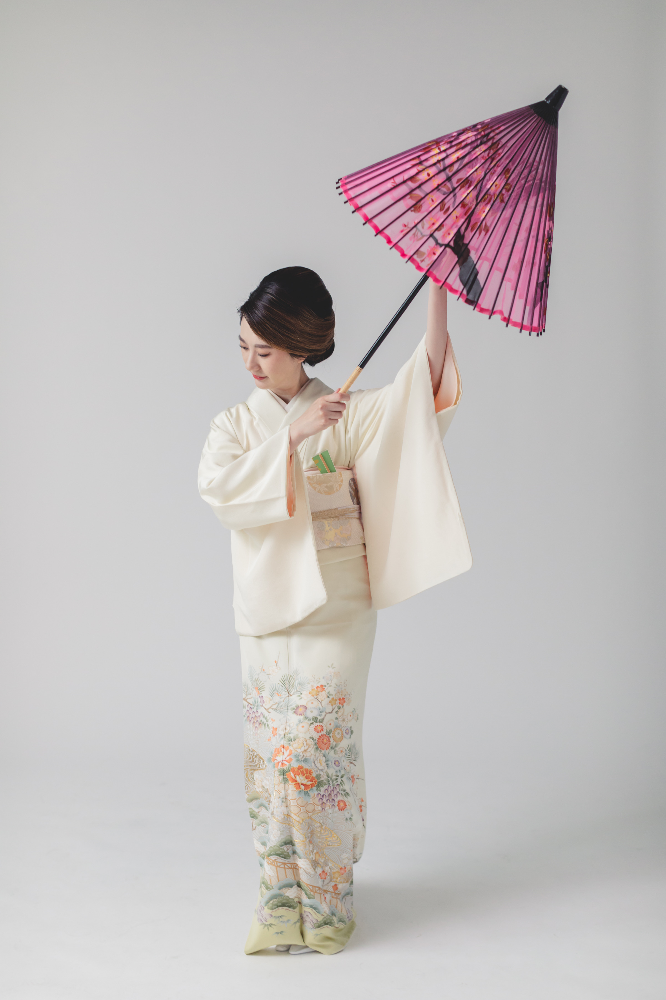
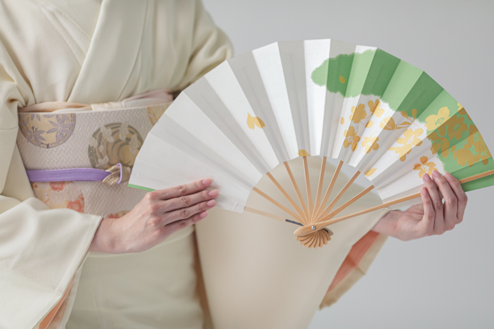
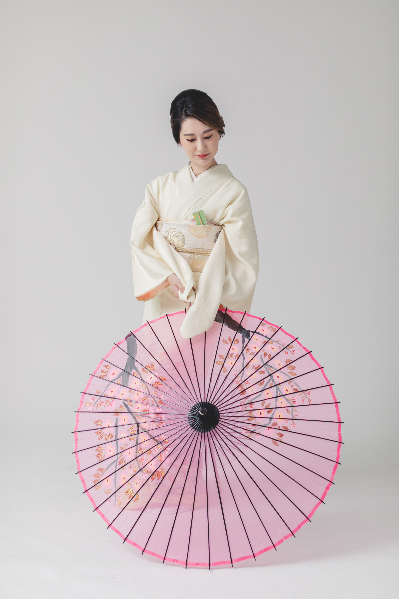
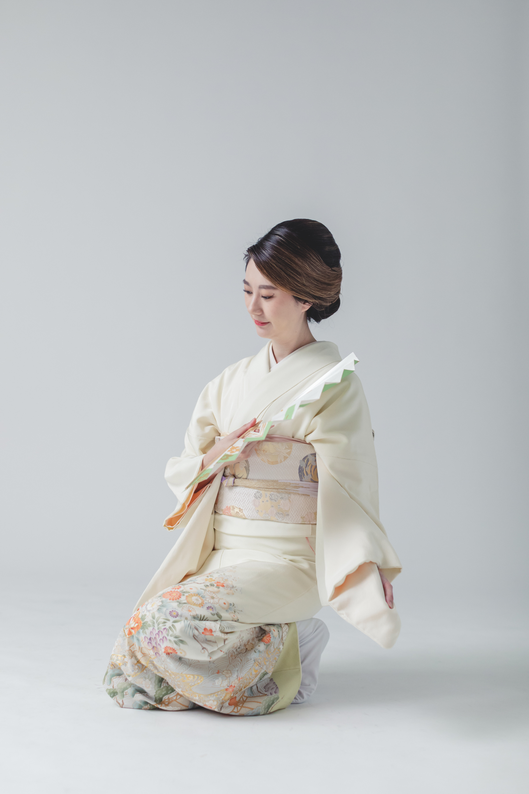
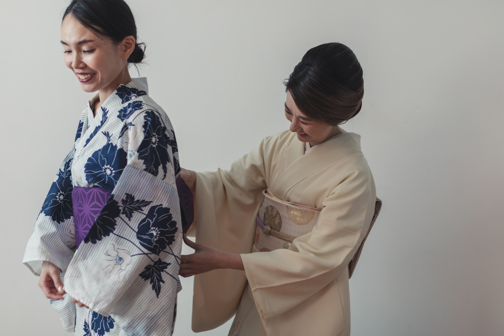
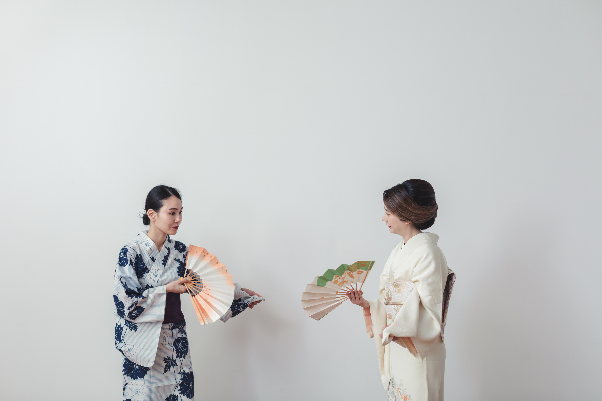
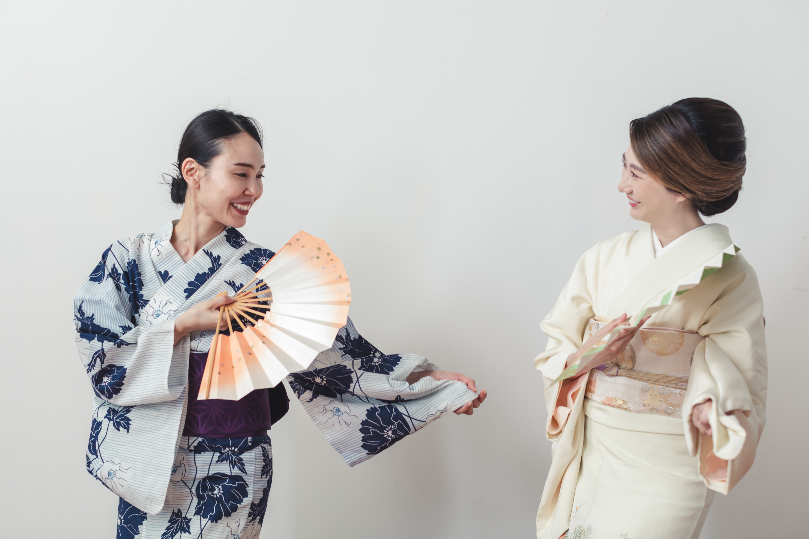
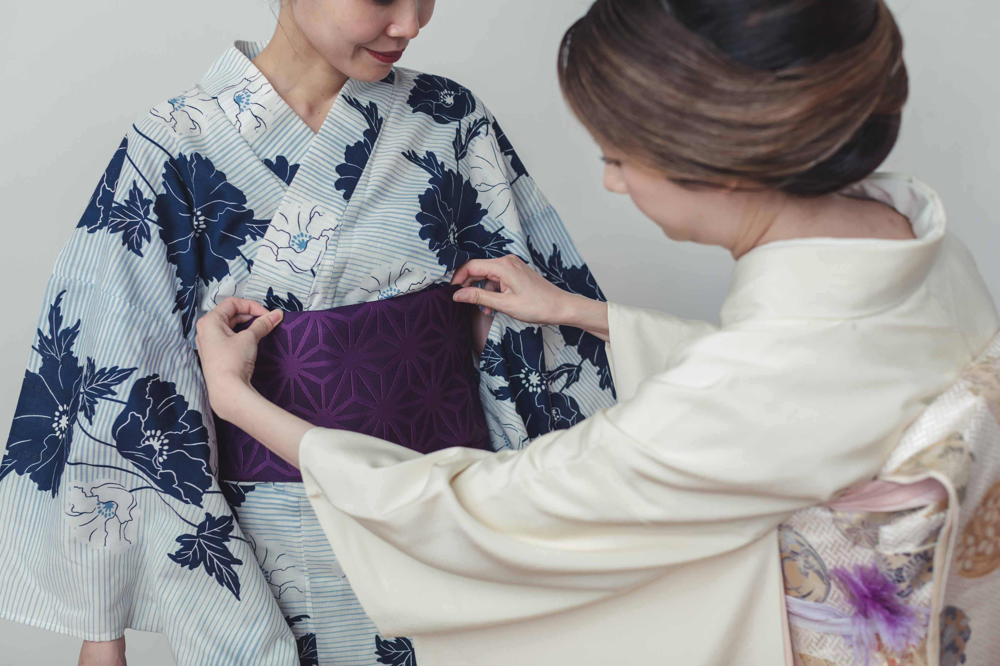
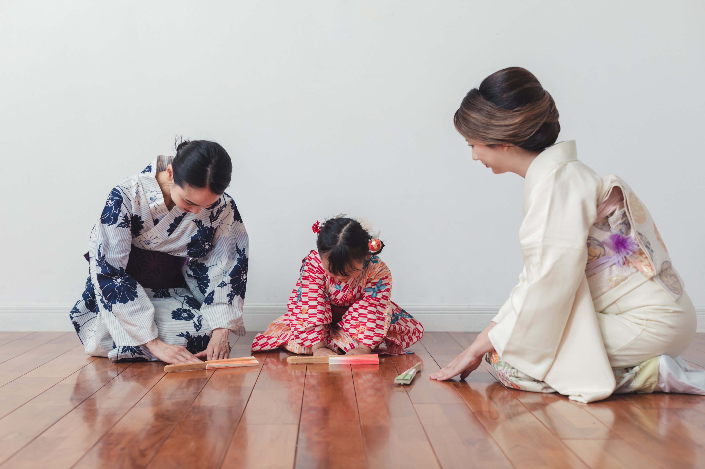
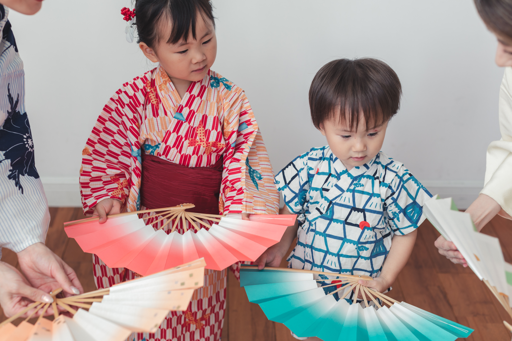
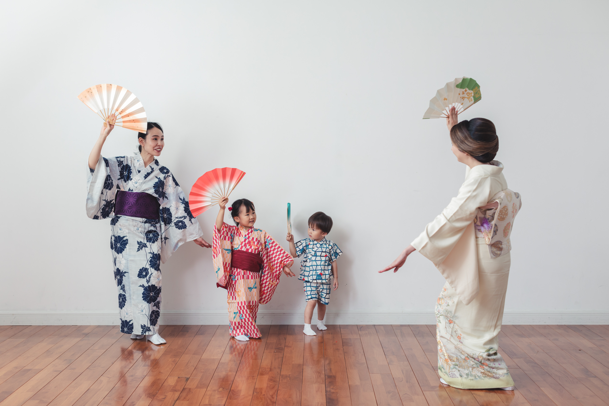
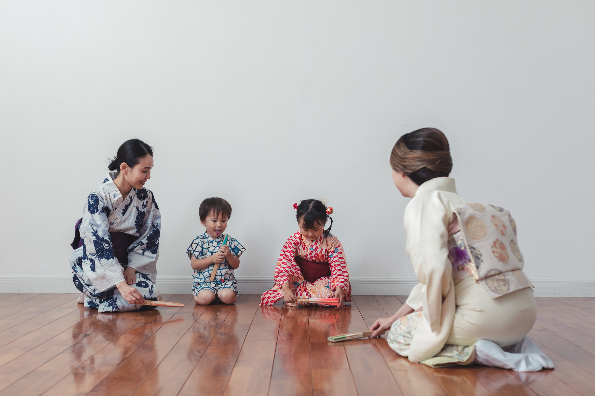
FAQ
Q. Are beginners welcome?
Yes, most students start with absolutely no experience.
We guide you carefully from the very basics, so please join with confidence.
Q. From what age can I join?
Children from around 3 years old are welcome.
We adapt flexibly to each child's pace and development — please feel free to contact us.
Q. Is there a trial lesson?
Yes, trial lessons are available (by appointment).
You can experience the studio atmosphere and lesson content firsthand.
Q. What will I learn?
Starting from basic posture, graceful movement (所作), and sense of rhythm, you will develop expressiveness and proper etiquette through dance.
Instruction is tailored to your age and level.
Q. Are lessons strict?
We are not unnecessarily strict, but we do value the fundamentals and proper etiquette.
We aim for instruction that is enjoyable and allows skills to develop naturally.
Q. Are there any recitals or performances?
Yes, we typically hold one performance opportunity per year.
Participation is completely optional — please feel no pressure.
Q. Could you tell me about the lesson fees?
Fees vary depending on the course — please feel free to contact us for details.
Q. Is there an enrollment fee?
Yes, there is an enrollment fee upon joining. We will provide full details upon inquiry.
Q. Are there any other costs?
If you participate in recitals, there may be additional costs for costumes and stage fees.
We will inform you in advance so there are no surprises.
Q. Do I need a kimono or yukata?
Comfortable clothing is perfectly fine to start.
We will guide you to wear a yukata once you are more accustomed to the lessons.
Q. Do I need to bring yukata, tabi socks, or props?
No, you do not need to bring anything.
Yukata, tabi, and all props used in lessons are provided by the studio.
Q. Is there a rental fee?
No, everything is provided at no charge.
Feel free to come just as you are — no bag needed.
Q. What are "props"?
Props include items such as folding fans (sensu) and tenugui hand towels used in Nihon Buyo.
They are used according to the piece and lesson content.
Q. Can I reschedule a lesson?
Yes, if you contact us in advance, we can arrange a make-up lesson (subject to our policy).
Q. What if I miss a lesson?
We will arrange for you to attend a make-up lesson.
Q. What are the benefits of learning Nihon Buyo?
Beyond developing beautiful posture and graceful movement, you will naturally cultivate concentration, expressiveness, and proper etiquette.
It also deepens your understanding of Japanese culture.
Q. Is Nihon Buyo open to male students as well?
Yes, students of all genders are warmly welcome.
There are also pieces specifically choreographed for male dancers.
Q. I tend to be shy — will I be okay?
Absolutely. Our instructors work gently and patiently with each student at their own pace.
Many students felt the same way when they first arrived, and quickly found themselves at ease.
Q. I'm not sure I'll be able to keep up. Is that okay?
We always move at a pace that feels right for you — making each lesson genuinely enjoyable is our priority.
Many students who came in with the same worry are still happily coming back.
Yukata, tabi socks, and all props are provided by the studio.
Just come as you are — no preparation needed.
SEI offers Japanese dance classes in Hong Kong, including Nihon Buyo (Japanese classical dance), kimono dressing, and traditional Japanese movement arts. Our studio near HKU provides an authentic Japan culture experience in Hong Kong for residents and visitors alike.
Whether you are looking for Japanese dance Hong Kong, hong kong Japan culture activities, or a unique cultural lesson, SEI welcomes beginners and experienced students with personalised instruction in English and Japanese.